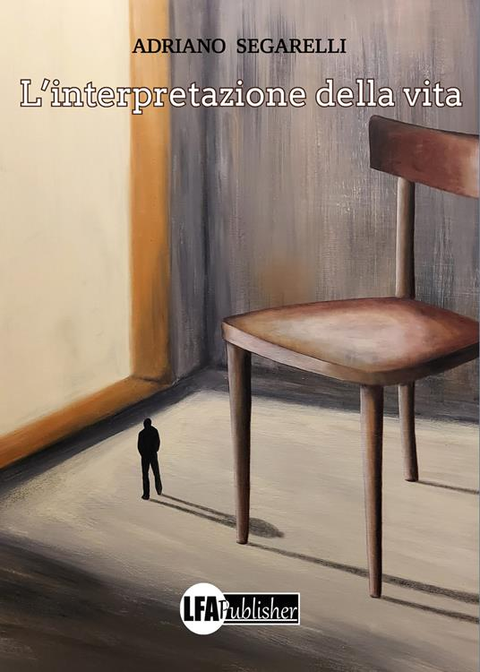

L'interpretazione della vita
Roma, 2041. Rachele compie vent’anni. Appartiene, come tutte le persone della sua età, alla generazione post-pandemia. È cresciuta e vive in un mondo ormai caratterizzato da un’enorme distanziamento sociale. La causa di questo cambiamento fu un virus che, vent’anni prima, costrinse tutta la popolazione a non uscire di casa. Furono emanati dal governo dei decreti legge, che prevedevano rigidi divieti e restrizioni, applicati per evitare i contagi e limitare il più possibile le vittime di quel terribile micro organismo. Il mondo durante quel periodo si ritrovò lontano dagli affetti e dalla vita sociale e si abituò, così nel tempo, a quella condizione di distanziamento, ritrovandosi a vivere in quel modo come fosse ormai la normalità. In questo futuro distopico le persone svolgono qualsiasi attività direttamente dalla propria abitazione e le città sono diventate dei fatiscenti deserti urbani. Tecnologie avanzate hanno preso il posto di qualsiasi essere umano. Sofisticati programmi simulano aggregazioni sociali, attraverso la creazione di ologrammi identici agli eventuali partecipanti che, al contrario del loro alter ego digitale, restano comodamente a casa.